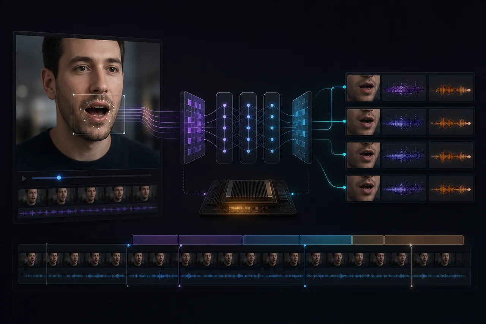

◀
▶
▶
LOCAL STUDIO / 2026
SILENT VIDEO TO SYNCHRONIZED SPEECH
LIPREADING
STUDIO
从嘴部画面识别英语，生成字幕和同步配音

无声视频 → 英语识别 → 字幕与合成语音
00:00
00:15
00:30
00:45
01:00
01:15
01:30
01:45
02:00
V1
VIDEO
VIDEO
S1
SUBTITLE 嘴部画面 英语识别 字幕片段 语音合成 同步播放
SUBTITLE 嘴部画面 英语识别 字幕片段 语音合成 同步播放
A1
TTS
TTS
PROJECT SYNOPSIS
分析无声视频中的连续嘴部画面，识别英语并生成字幕和合成语音。识别、语音合成与播放可分段并行处理，视频、字幕和语音使用同一组时间戳保持同步。
识别结果如何与视频同步
人脸尺度、姿态和嘴部抖动会影响输入质量。识别与语音合成的耗时也不固定，字幕、语音和视频如果分别计时，播放时就可能错位。
用片段时间戳安排字幕与语音
YuNet 定位并裁剪嘴部画面，模型按片段识别。每段记录 start_s、end_s、text 和 audio，字幕与 Piper TTS 共用这份记录，播放器按视频帧安排输出。
处理流程与输出
CH 1
VISION
嘴部画面预处理
YuNet 人脸与关键点检测，完成嘴部稳定定位、对齐、裁剪与连续帧构建
CH 2
VISION
英语唇语识别
仅使用嘴部画面，通过视觉前端、Conformer 与 CTC/Attention 解码识别英语，不读取原视频声音
CH 3
INFERENCE
分段调度
按 --segment-seconds 配置片段长度，支持 5 秒级处理；片段完成即生成字幕并准备 TTS
CH 4
INFERENCE
GPU 推理
CUDA 推理与语音合成、播放并行。项目记录的样例为 124 秒视频约 30 秒完成 GPU 识别
CH 5
MEDIA
字幕与语音同步
字幕和语音读取同一组片段时间戳，首段就绪后可边处理边播放
CH 6
MEDIA
文件导出
导出分段 JSON、SRT、与原视频同帧率的字幕视频、按时间轴对齐的 WAV 和配音 MP4
语音播放与片段长度处理
- RULE 01
识别仅使用连续嘴部画面，不读取原始音轨。
- RULE 02
合成语音提前结束时静音等待，超出片段时裁剪，保持原语速。
- RULE 03
字幕、语音和视频使用同一组片段时间戳。
- RULE 04
播放以视频帧为时钟，推理提前完成时等待对应片段。